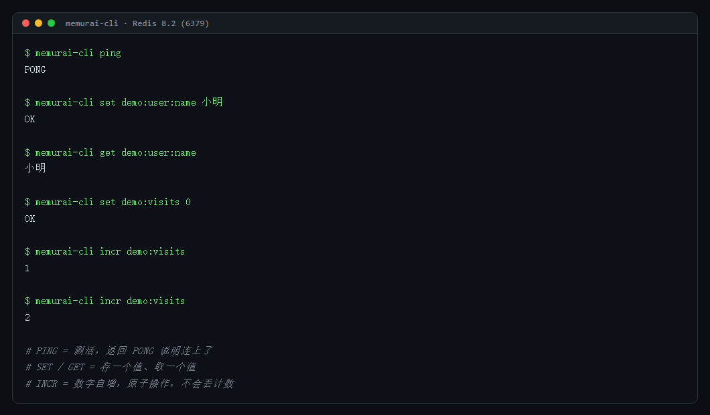
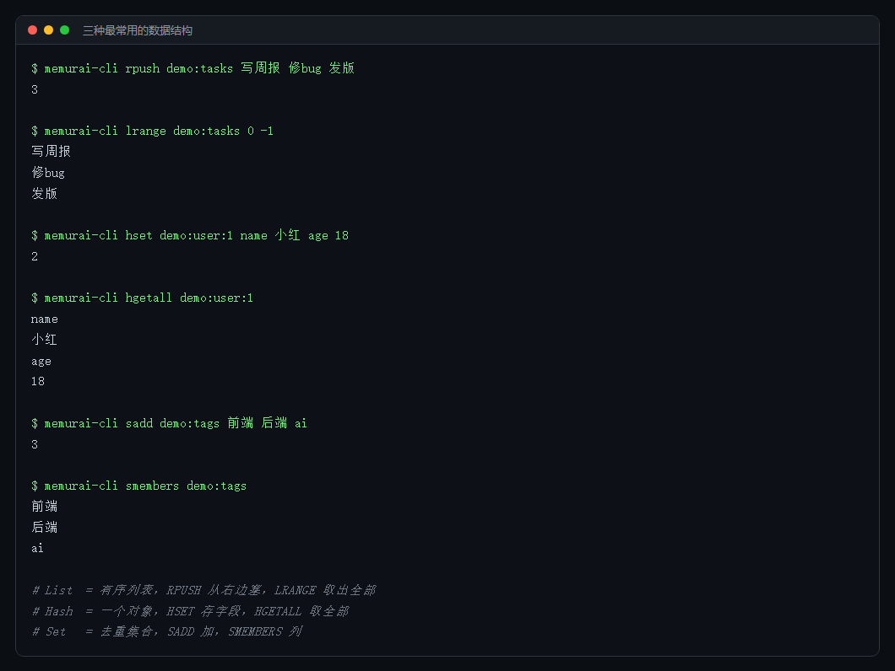
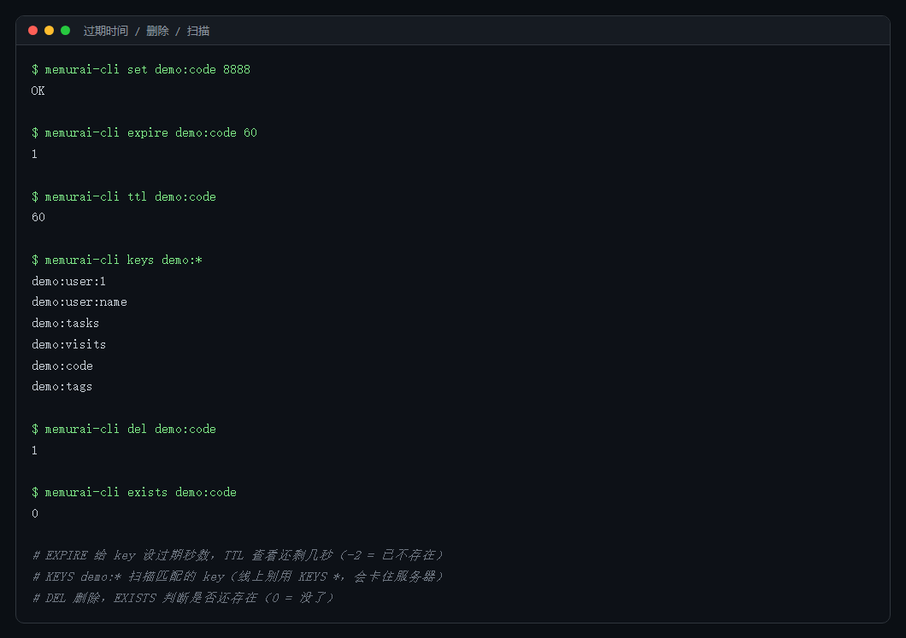
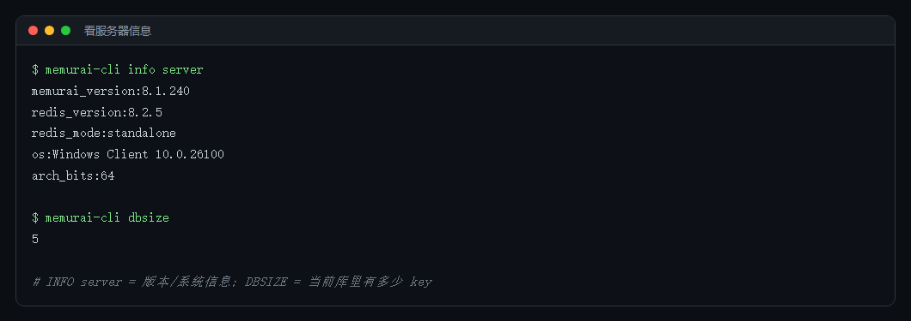

Redis 入门
截图来自你本机真实运行的 Memurai 8.1（Redis 8.2 兼容），命令和输出都是真跑出来的
0 它到底是干什么的
一句话：把数据放在内存里的键值数据库。快，但断电会丢（除非开持久化）。
| 典型用途 | 为什么用它 |
|---|---|
| 缓存（热点数据） | 查内存比查 MySQL 快几百倍 |
| 计数器 / 限流 | INCR 是原子的，多个请求同时加也不会算错 |
| 排行榜 | 有序集合（ZSet）天生适合排名 |
| 简单队列 | List 左进右出 |
| 会话 / 验证码 | 设个过期时间，到点自动消失 |
🧠 记忆方法：Redis = 一个大字典（key → value），只是 value 可以是字符串、列表、哈希、集合、有序集合。
1 连上并跑通第一条命令
装好后打开终端，用 redis-cli（Windows 上 Memurai 叫 memurai-cli）连本机 6379 端口。
1
PING —— 回 PONG 就说明连上了
2
SET key value 存，GET key 取
3
INCR key 自增（key 不存在会从 0 开始变成 1）

真实输出：PONG / OK / 小明 / 1 / 2
✅ 到这里你已经会了 Redis 的核心动作：存、取、自增。90% 的日常用法就这三样。
2 三种最常用的数据结构
Redis 的 value 不只是字符串，这是它最容易被低估的地方。

List / Hash / Set 的真实命令与输出
| 类型 | 命令 | 像什么 | 典型场景 |
|---|---|---|---|
| String | SET / GET / INCR | 一个值 | 缓存、计数 |
| List | RPUSH / LRANGE | 数组 | 消息队列、最新列表 |
| Hash | HSET / HGETALL | 对象 | 存一个用户的多个字段 |
| Set | SADD / SMEMBERS | 去重的袋子 | 标签、共同好友 |
| ZSet | ZADD / ZRANGE | 带分数的集合 | 排行榜 |
💡
LRANGE key 0 -1 里的 -1 表示「最后一个」，这是 Redis 的索引写法（负数从尾部数）。3 过期、删除、扫描
缓存必须能自动过期，否则内存会被塞满。

EXPIRE 设过期 → TTL 查剩余 → DEL 删除 → EXISTS 判断存在
| 命令 | 作用 | 返回值含义 |
|---|---|---|
EXPIRE key 60 | 60 秒后自动删除 | 1=设置成功，0=key 不存在 |
TTL key | 还剩几秒 | -1=永不过期，-2=已不存在 |
DEL key | 删除 | 删掉的 key 数量 |
EXISTS key | 是否存在 | 1=在，0=不在 |
🚫 线上千万别用
KEYS *。它要遍历所有 key，key 一多会把服务器卡住。排查用 SCAN（分批游标），虽然麻烦但不会卡。4 看服务器信息
连不上、怀疑版本不对时，先看这里。

INFO server 显示版本/系统；DBSIZE 显示当前库有多少 key
🔍 你本机的实际版本：
连不上时依次排查：服务有没有起（Windows 服务里的 Memurai）→ 端口 6379 有没有监听 → 防火墙。
memurai_version 8.1.240 / redis_version 8.2.5。连不上时依次排查：服务有没有起（Windows 服务里的 Memurai）→ 端口 6379 有没有监听 → 防火墙。
5 新手必踩的坑
① 以为 Redis 是数据库，就把唯一数据只放 Redis。
它默认在内存里，重启可能丢。重要数据必须有 MySQL/Postgres 兜底。
它默认在内存里，重启可能丢。重要数据必须有 MySQL/Postgres 兜底。
② 忘了设过期时间。
缓存 key 越积越多，内存爆掉后 Redis 会开始淘汰数据，你的业务就会出现「莫名其妙查不到」。
缓存 key 越积越多，内存爆掉后 Redis 会开始淘汰数据，你的业务就会出现「莫名其妙查不到」。
③ 用
见上一节，线上会卡死。用
KEYS * 排查。见上一节，线上会卡死。用
SCAN 0 MATCH demo:* COUNT 100。④ 以为 key 不分大小写 / 可以用中文。
key 是二进制安全的，中文能存，但运维排查时不好读，建议用
key 是二进制安全的，中文能存，但运维排查时不好读，建议用
业务:对象:id 格式，比如 user:1:name。✅ 记住一条：Redis 是「快」的数据库，不是「不会丢」的数据库。